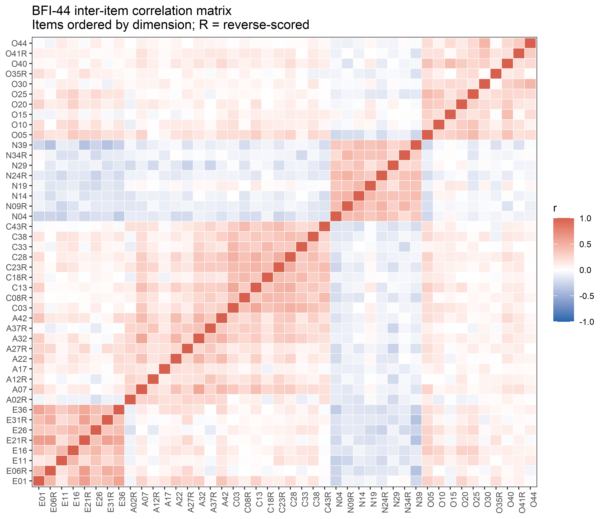
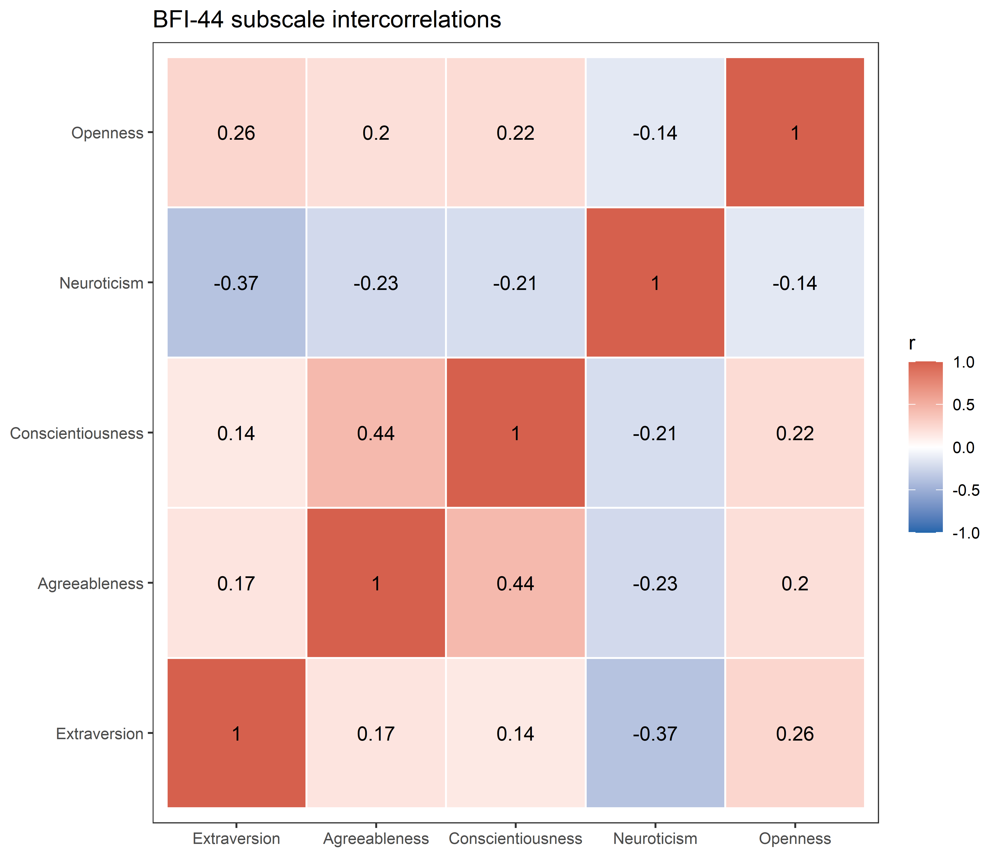
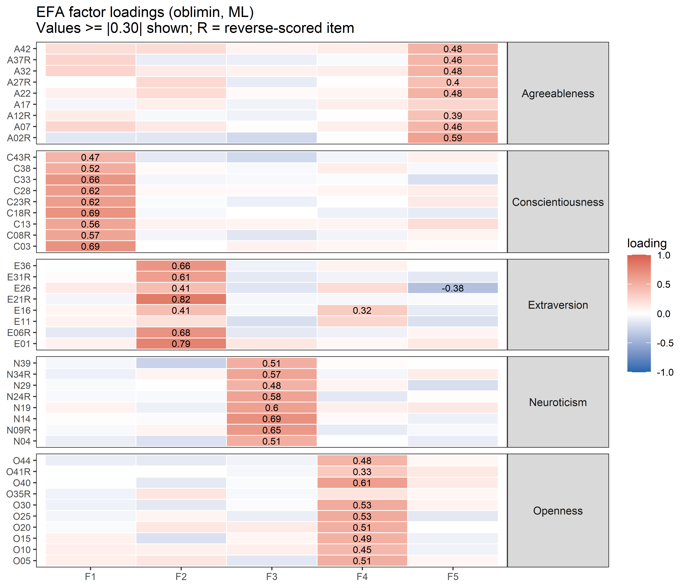
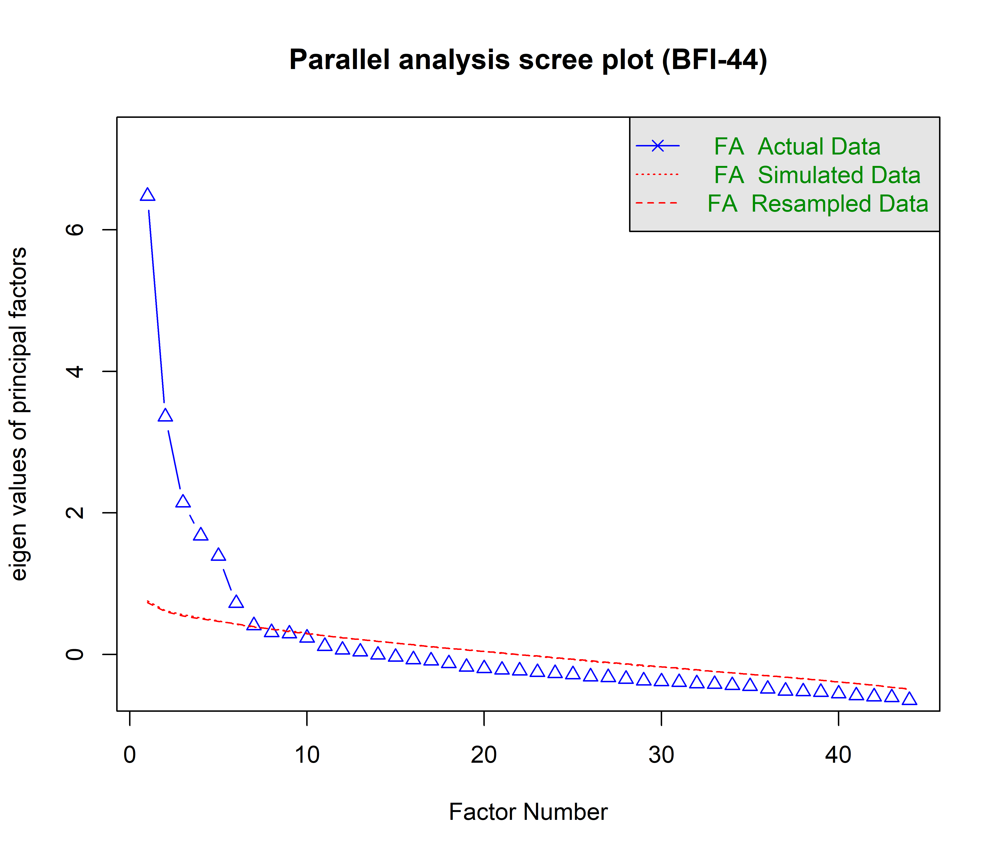

| Label | Dimension | Reverse-scored | Item wording |
|---|---|---|---|
| E01 | Extraversion | FALSE | Is talkative |
| A02R | Agreeableness | TRUE | Tends to find fault with others |
| C03 | Conscientiousness | FALSE | Does a thorough job |
| N04 | Neuroticism | FALSE | Is depressed, blue |
| O05 | Openness | FALSE | Is original, comes up with new ideas |
| E06R | Extraversion | TRUE | Is reserved |
| A07 | Agreeableness | FALSE | Is helpful and unselfish with others |
| C08R | Conscientiousness | TRUE | Can be somewhat careless |
| N09R | Neuroticism | TRUE | Is relaxed, handles stress well |
| O10 | Openness | FALSE | Is curious about many different things |
| E11 | Extraversion | FALSE | Is full of energy |
| A12R | Agreeableness | TRUE | Starts quarrels with others |
| C13 | Conscientiousness | FALSE | Is a reliable worker |
| N14 | Neuroticism | FALSE | Can be tense |
| O15 | Openness | FALSE | Is ingenious, a deep thinker |
| E16 | Extraversion | FALSE | Generates a lot of enthusiasm |
| A17 | Agreeableness | FALSE | Has a forgiving nature |
| C18R | Conscientiousness | TRUE | Tends to be disorganized |
| N19 | Neuroticism | FALSE | Worries a lot |
| O20 | Openness | FALSE | Has an active imagination |
| E21R | Extraversion | TRUE | Tends to be quiet |
| A22 | Agreeableness | FALSE | Is generally trusting |
| C23R | Conscientiousness | TRUE | Tends to be lazy |
| N24R | Neuroticism | TRUE | Is emotionally stable, not easily upset |
| O25 | Openness | FALSE | Is inventive |
| E26 | Extraversion | FALSE | Has an assertive personality |
| A27R | Agreeableness | TRUE | Can be cold and aloof |
| C28 | Conscientiousness | FALSE | Perseveres until the task is finished |
| N29 | Neuroticism | FALSE | Can be moody |
| O30 | Openness | FALSE | Values artistic, aesthetic experiences |
| E31R | Extraversion | TRUE | Is sometimes shy, inhibited |
| A32 | Agreeableness | FALSE | Is considerate and kind to almost everyone |
| C33 | Conscientiousness | FALSE | Does things efficiently |
| N34R | Neuroticism | TRUE | Remains calm in tense situations |
| O35R | Openness | TRUE | Prefers work that is routine |
| E36 | Extraversion | FALSE | Is outgoing, sociable |
| A37R | Agreeableness | TRUE | Is sometimes rude to others |
| C38 | Conscientiousness | FALSE | Makes plans and follows through with them |
| N39 | Neuroticism | FALSE | Gets nervous easily |
| O40 | Openness | FALSE | Likes to reflect, play with ideas |
| O41R | Openness | TRUE | Has few artistic interests |
| A42 | Agreeableness | FALSE | Likes to cooperate with others |
| C43R | Conscientiousness | TRUE | Is easily distracted |
| O44 | Openness | FALSE | Is sophisticated in art, music, or literature |
BFI-44 Validation
Description
The Big Five Inventory (BFI-44) was developed by John & Srivastava (1999) as a short measure of the five major dimensions of personality. Participants rated how much each statement applied to them on a scale from 1 (Disagree strongly) to 6 (Agree strongly). The dataset contains 433 respondents.
Items are prefixed by their dimension (Extraversion, Agreeableness, Conscientiousness, Neuroticism, Openness) followed by the item number. Items marked R are reverse-scored before analysis.
John, O. P., & Srivastava, S. (1999). The Big Five trait taxonomy: History, measurement, and theoretical perspectives. In L. A. Pervin & O. P. John (Eds.), Handbook of personality: Theory and research (2nd ed., pp. 102–138). Guilford Press.
Item List
Inter-Item Correlation Matrix
Code
cor_mat <- cor(df[, factor_order], use="pairwise.complete.obs")
cor_long <- melt(cor_mat)
cor_long$Var1 <- factor(cor_long$Var1, levels=factor_order)
cor_long$Var2 <- factor(cor_long$Var2, levels=factor_order)
ggplot(cor_long, aes(x=Var1, y=Var2, fill=value)) +
geom_tile(color="white", linewidth=0.2) +
scale_fill_gradient2(low="#2166ac", mid="white", high="#d6604d",
midpoint=0, limits=c(-1,1), name="r") +
theme_bw(base_size=9) +
theme(axis.text.x=element_text(angle=90, hjust=1, size=7),
axis.text.y=element_text(size=7),
axis.title=element_blank(),
panel.grid=element_blank()) +
ggtitle("BFI-44 inter-item correlation matrix\nItems ordered by dimension; R = reverse-scored")
Subscale Correlations
Code
subscale_scores <- as.data.frame(sapply(names(factors), function(f) {
cols <- item_name_map[sprintf("pers%02d", factors[[f]])]
rowMeans(df[, cols], na.rm=TRUE)
}))
cat("Subscale descriptives\n")Subscale descriptivesCode
print(psych::describe(subscale_scores)) vars n mean sd median trimmed mad min max range skew kurtosis se
Extraversion 1 433 3.70 0.85 3.62 3.71 0.93 1.62 5.38 3.75 -0.04 -0.71 0.04
Agreeableness 2 433 4.17 0.66 4.22 4.20 0.66 1.89 5.44 3.56 -0.60 0.57 0.03
Conscientiousness 3 433 4.11 0.76 4.22 4.14 0.82 2.11 5.44 3.33 -0.40 -0.53 0.04
Neuroticism 4 433 3.48 0.83 3.50 3.49 0.93 1.38 5.38 4.00 -0.14 -0.45 0.04
Openness 5 433 3.72 0.60 3.70 3.72 0.59 1.80 5.10 3.30 -0.06 -0.35 0.03Code
cat("\nSubscale intercorrelations\n")
Subscale intercorrelationsCode
sub_cor <- round(cor(subscale_scores, use="pairwise.complete.obs"), 2)
print(sub_cor) Extraversion Agreeableness Conscientiousness Neuroticism Openness
Extraversion 1.00 0.17 0.14 -0.37 0.26
Agreeableness 0.17 1.00 0.44 -0.23 0.20
Conscientiousness 0.14 0.44 1.00 -0.21 0.22
Neuroticism -0.37 -0.23 -0.21 1.00 -0.14
Openness 0.26 0.20 0.22 -0.14 1.00Code
sub_long <- melt(sub_cor)
ggplot(sub_long, aes(x=Var1, y=Var2, fill=value)) +
geom_tile(color="white", linewidth=0.5) +
geom_text(aes(label=value), size=3.5) +
scale_fill_gradient2(low="#2166ac", mid="white", high="#d6604d",
midpoint=0, limits=c(-1,1), name="r") +
theme_bw(base_size=10) +
theme(axis.title=element_blank(), panel.grid=element_blank()) +
ggtitle("BFI-44 subscale intercorrelations")
Exploratory Factor Analysis (5 Factors)
Code
set.seed(42)
efa <- fa(df, nfactors=5, rotate="oblimin", fm="ml", scores="regression")
print(efa$loadings, cutoff=0.30, sort=TRUE)
Loadings:
ML1 ML4 ML2 ML3 ML5
C03 0.689
C08R 0.572
C13 0.562
C18R 0.686
C23R 0.623
C28 0.619
C33 0.663
C38 0.521
E01 0.787
E06R 0.683
E21R 0.823
E31R 0.608
E36 0.664
N04 0.513
N09R 0.650
N14 0.693
N19 0.599
N24R 0.580
N34R 0.571
N39 0.509
O05 0.513
O20 0.514
O25 0.533
O30 0.528
O40 0.607
A02R 0.590
A07 0.460
O10 0.445
E11
A12R 0.387
O15 0.493
E16 0.412 0.322
A17
A22 0.483
E26 0.415 -0.384
A27R 0.396
N29 0.485
A32 0.483
O35R
A37R 0.462
O41R 0.334
A42 0.478
C43R 0.472
O44 0.476
ML1 ML4 ML2 ML3 ML5
SS loadings 3.732 3.527 3.094 2.650 2.411
Proportion Var 0.085 0.080 0.070 0.060 0.055
Cumulative Var 0.085 0.165 0.235 0.296 0.350Code
loadings_mat <- as.data.frame(unclass(efa$loadings))
colnames(loadings_mat) <- paste0("F", 1:5)
loadings_mat$item <- rownames(loadings_mat)
loadings_mat$expected <- item_labels[loadings_mat$item]
load_long <- melt(loadings_mat, id.vars=c("item","expected"),
variable.name="factor", value.name="loading")
load_long$item <- factor(load_long$item, levels=factor_order)
ggplot(load_long, aes(x=factor, y=item, fill=loading)) +
geom_tile(color="white", linewidth=0.3) +
geom_text(aes(label=ifelse(abs(loading)>=0.30, round(loading,2), "")), size=2.5) +
scale_fill_gradient2(low="#2166ac", mid="white", high="#d6604d",
midpoint=0, limits=c(-1,1), name="loading") +
facet_grid(expected ~ ., scales="free_y", space="free_y") +
theme_bw(base_size=9) +
theme(strip.text.y=element_text(angle=0, size=8),
axis.text.y=element_text(size=7),
axis.title=element_blank(),
panel.grid=element_blank()) +
ggtitle("EFA factor loadings (oblimin, ML)\nValues >= |0.30| shown; R = reverse-scored item")
Parallel Analysis
Code
fa.parallel(df, fm="ml", fa="fa",
main="Parallel analysis scree plot (BFI-44)")
Parallel analysis suggests that the number of factors = 6 and the number of components = NA